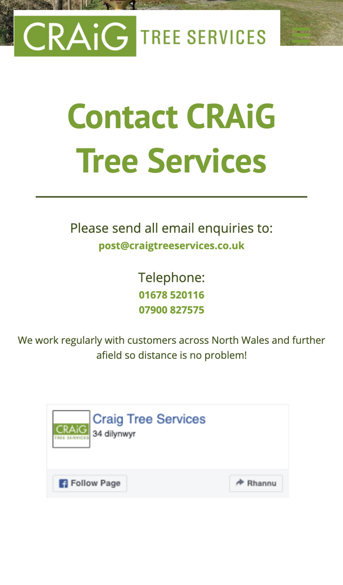

Craig Tree Services: fewer missed calls, less chasing for details
I went through your website on a phone, the way a homeowner with a storm-damaged tree or a buyer needing a mortgage report would, and read your homepage, services, about and contact pages. Your accreditations, insurance and qualifications are right there, which is exactly what people want to see. Where I think you'd save time, and win more jobs, is how an enquiry gets to you.
What's already working
Three things I'd change
Take enquiries with photos attached
Your contact page says "Please send all email enquiries to: post@craigtreeservices.co.uk". There's no enquiry form on any page I checked, so the details depend on what each person thinks to put in an email.

An email often arrives without the postcode, what the tree is or how close it is to the house. That starts a round of replies before you can price the job or plan a visit.
- A short form on their phone asks for the postcode, the service (tree surgery, survey, mortgage report or planning survey) and a few photos of the tree.
- They get a reply straight away saying what happens next and roughly when they'll hear from you.
- You get every enquiry complete in one place, photos included, ready to price or to book a visit.
Catch the calls missed up a tree
Your contact page gives two numbers, "01678 520116" and "07900 827575". Your own team of tree surgeons is out doing the work, including "storm damaged trees".
Nobody can answer a phone halfway up a tree with a saw running. Someone with a tree down after a storm will usually ring the next firm on the list.
- Both numbers become tap-to-call, so ringing you from a phone is one tap.
- A missed call gets a text back within a minute: sorry we missed you, we're out on a job, send us a photo here.
- At the end of the day you see every missed caller in one list, with their photos and what they need.
Book surveys and mortgage reports online
Your services page says "We provide tree reports in support of mortgage applications", and your about page mentions "Tree surveys to accompany Planning Applications". Arranging either starts with an email or a call.
House buyers and developers are usually working to a lender's or a planner's deadline. Being able to pick a date there and then keeps the job with you.
- They choose the report they need, give the address and pick a date from the days you've set aside for survey work.
- They upload anything useful ahead of the visit, such as the lender's letter or a site plan.
- You get a confirmed booking in your calendar with the paperwork attached, and they get a reminder the day before.
Your website, answering for you
An assistant that answers the questions you get asked again and again, at any hour. These answers come only from your own website: your homepage, services and about pages.
Anything it can't answer, it passes to you with the customer's details.
What happens next
For five local businesses I'm setting up one of these for free, in return for an honest review. Pick whichever would help most.
I'm Tom Williams and I run Tomoni-AI. If a 20-minute chat would help, reply to my email or give me a ring.
Call 07971 512158Email Tom